1032B10 toothed timing belt - r + r for timing adjustment or replacement
- Path
- Procedures > 10 ENGINE > 1032 TIMING SYSTEM > 1032B belt timing system > 1032B10 toothed timing belt - r + r for timing adjustment or replacement
- Kind
- repair procedure (removal / refitting; the operation number is the code)
- Applies to
- engines: 1.6 TS , 2.0 JTS, 2.5 V6, 3.2 V6, 1.9 JTD 8v , 1.9 JTD 16v, 2.0 JTS, 2.4 JTD 20v; all production periods
- Interactive page
- https://sloeber94.github.io/elrnDB-a156/en/#/3237489
Applies to: engines: 2.5 V6, 3.2 V6; all production periods
Applies to: engines: 1.6 TS ; all production periods
Applies to: engines: 2.0 JTS, 2.0 JTS; all production periods
 Removing
Removing
 Refitting
RefittingPosition the vehicle on the ramp.
Ensure that the ignition key is in OFF position, then disconnect the negative battery terminal.
 | Name | Connector |
|---|---|---|
- | Battery |
Proceed with removal 4450B04 right front wheel r r .
Proceed with removal 7055B54 under-engine guard - r r .
Proceed with removal 1016A40 ignition coil cover on cylinder head- r+r .
1. Undo the bolts (1a), nut (1b) and remove the engine components single drive belt protection (1c).
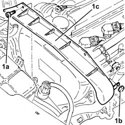
Applies to: engines: 2.0 JTS, 2.0 JTS; all production periods
1. Remove the buttons (1a), undo the attachments (1b) and remove the front right wheelarch mudguard (1c).
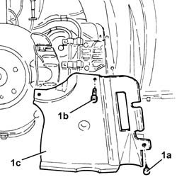
Applies to: engines: 2.0 JTS, 2.0 JTS; all production periods
1. Undo the nut (1a) and remove the brackets (1b) securing the power steering pipes.
2. Use a spanner on the moving tensioner (2a) and remove the single drive belt (2b).
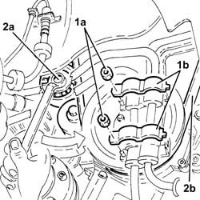
Applies to: engines: 2.0 JTS, 2.0 JTS; all production periods
1. Undo bolts (1a) and remove protection (1b).
2. Fit the flywheel lock.
 | Name | Country |
|---|---|---|
2 | Counter-torque | 1.860.898.000 |
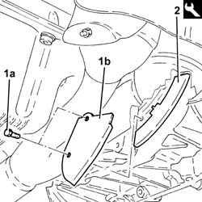
Applies to: engines: 2.0 JTS, 2.0 JTS; all production periods
1. Undo the bolts (1a) and remove the crankshaft pulley (1b).
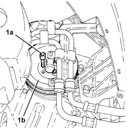
Applies to: engines: 2.0 JTS, 2.0 JTS; all production periods
1. Remove the cap (1a), undo the bolt (1b) and remove the single belt fixed tensioner (1c).
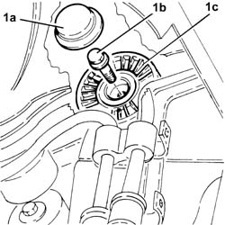
Applies to: engines: 2.0 JTS, 2.0 JTS; all production periods
1. Undo the bolts (1a) and remove the upper protective timing cover (1b).
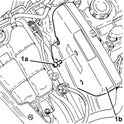
Applies to: engines: 2.0 JTS, 2.0 JTS; all production periods
1. Undo the bolts (1a) and remove the right side protective timing cover (1b).
2. Undo the bolts (2a) and remove the left side protective timing cover (2b).
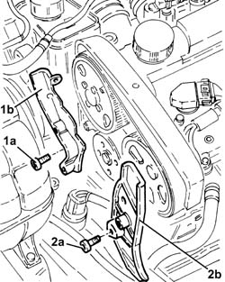
Applies to: engines: 2.0 JTS, 2.0 JTS; all production periods
1. Undo the bolts (1a) and remove the lower protective timing cover (1b).
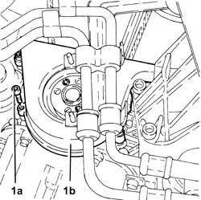
Applies to: engines: 2.0 JTS, 2.0 JTS; all production periods
1. Loosen the nut for the counter-balance shaft toothed drive belt tensioner.
2. Remove the counter-balance shaft drive belt.
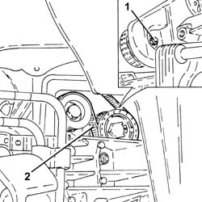
Applies to: engines: 2.0 JTS, 2.0 JTS; all production periods
1. Undo the bolts (1a) and remove the counter-balance shaft drive belt drive pulley (1b).
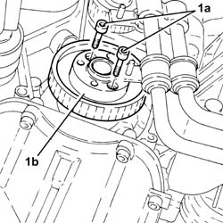
Applies to: engines: 2.0 JTS, 2.0 JTS; all production periods
Remove the flywheel lock.
| Name | Country |
|---|---|---|
- | Counter-torque | 1.860.898.000 |
1. Disconnect the electrical connections from the ignition coils.
| Name | Connector |
|---|---|---|
1 | Ignition coil |
2. Undo nut (2a) and disconnect earth lead (2b) from the cam cover.
| Name | Connector |
|---|---|---|
2 | Earth on engine |
3. Undo the bolts (3a) and move wiring duct (3b) aside.
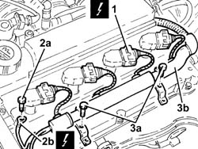
Applies to: engines: 2.0 JTS, 2.0 JTS; all production periods
1. Undo the bolts (1a) and remove the ignition coil (1b).
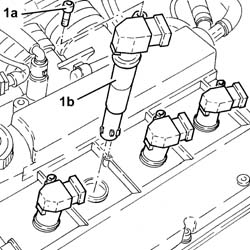
Applies to: engines: 2.0 JTS, 2.0 JTS; all production periods
Remove the spark plug for cylinder no. 1.
1. Fit the tool (1a), complete with dial gauge (1b), in the housing of the spark plug for cylinder no. 1.
| Name | Country |
|---|---|---|
1a | Extension | 1.860.895.001 |
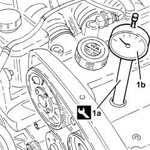
Applies to: engines: 2.0 JTS, 2.0 JTS; all production periods
Adjust the bolt securing the timing drive sprocket and turn the crankshaft clockwise, timing gear side, until the piston of cylinder no.1 is at T.D.C. in the explosion stroke.
Remove the tool complete with dial gauge from the seat of the cylinder no. 1 plug.
| Name | Country |
|---|---|---|
- | Extension | 1.860.895.001 |
1. Slacken the nut on the timing belt moving tensioner.
2. Prise off and remove the timing belt.
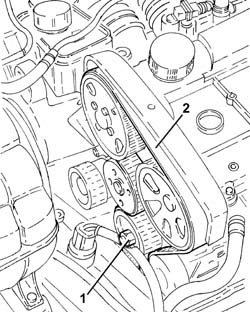
Applies to: engines: 2.0 JTS, 2.0 JTS; all production periods
1. Release the fuel vapour supply pipe to the high-pressure fuel pump (1a) from the band on the tappet cover.
2. Undo the bolt (2a) and disconnect the connector (2b) for the vapour recovery pipes from the tappet cover.
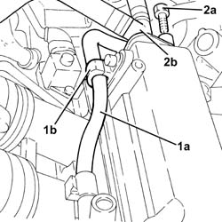
Applies to: engines: 2.0 JTS, 2.0 JTS; all production periods
1. Undo the bolts (1a) and remove the tappet cover (1b), complete with seal.
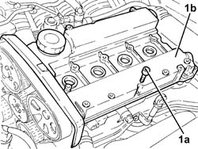
Applies to: engines: 2.0 JTS, 2.0 JTS; all production periods
Refitting
Removing1. Fit the tool (1a), complete with dial gauge (1b), in the housing of the spark plug for cylinder no. 1.
| Name | Country |
|---|---|---|
1a | Extension | 1.860.895.001 |
Rotate the crankshaft in a clockwise direction until the piston for cylinder no. 1 is at T.D.C. in the explosion stroke.
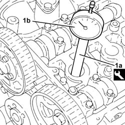
Applies to: engines: 2.0 JTS, 2.0 JTS; all production periods
1. Undo the bolts (1a) of the timing driven pulley, inlet side, using the tool (1b) for counter-torque.
| Name | Country |
|---|---|---|
1b | Counter-torque | 1.860.856.001 |
2. Loosen the bolt (2a) for the exhaust -side driven toothed pulley, using tool (2b) for counter-torque.
| Name | Country |
|---|---|---|
2b | Spanner for camshaft pulley rotation | 1.860.831.002 |
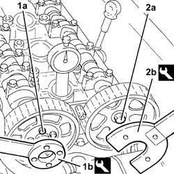
Applies to: engines: 2.0 JTS, 2.0 JTS; all production periods
Undo the bolts and remove the 4th inlet side camshaft cap and the 2nd exhaust side camshaft cap.
1. Fit the tool (1a) in place of the camshaft caps removed and fix it tightening the bolts (1b) to the recommended torque.
| Name | Country |
|---|---|---|
1a | Gauge | 1.870.859.000 |
 | Fastening | Component | Ø | Value (daNm) |
|---|---|---|---|---|
1b | Bolt | ENGINE TIMING ADJUSTMENT TEMPLATES | M7 | (Cylinder head side) 1.0 |
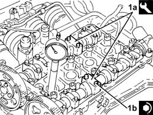
Applies to: engines: 2.0 JTS, 2.0 JTS; all production periods
1. Fit the timing belt, following the order indicated in the diagram.
toothed drive pulley (1a)
fixed tensioner (1b)
exhaust side toothed driven pulley (1c)
inlet side toothed driven pulley (1d).
mobile tensioner (1e)
coolant pump pulley (1f).
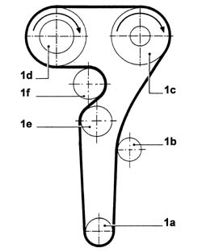
Applies to: engines: 2.0 JTS, 2.0 JTS; all production periods
1. Using the tool, rotate the timing moving tensioner until the maximum tension is applied to the timing belt.
| Name | Country |
|---|---|---|
1 | Key | 1.822.149.000 |
2. Tighten the nut for the moving tensioner to the recommended torque.
| Fastening | Component | Ø | Value (daNm) |
|---|---|---|---|---|
2 | Nut | MOBILE TIMING TENSIONER | M8 | 2.3 ÷ 2.8 |
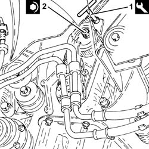
Applies to: engines: 2.0 JTS, 2.0 JTS; all production periods
1. Tighten the bolts (1a) for the camshaft driven pulley, inlet side, to the recommended torque using the tool (1b) for counter-torque.
| Fastening | Component | Ø | Value (daNm) |
|---|---|---|---|---|
1a | Bolt | TIMING GEAR DRIVEN PULLEYS | M6 | (Inlet camshaft side) 0.8 ÷ 1.0 |
| Name | Country |
|---|---|---|
1b | Counter-torque | 1.860.856.001 |
2. Tighten the bolt (2a) securing the exhaust side timing driven pulley to the recommended torque, using the tool (2b) for counter-torque.
| Fastening | Component | Ø | Value (daNm) |
|---|---|---|---|---|
2a | Bolt | TIMING GEAR DRIVEN PULLEYS | M12 | (Exhaust camshaft side) 10.8÷13.2 |
| Name | Country |
|---|---|---|
2b | Spanner for camshaft pulley rotation | 1.860.831.002 |
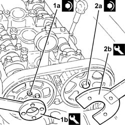
Applies to: engines: 2.0 JTS, 2.0 JTS; all production periods
Remove the tool for timing the camshafts.
| Name | Country |
|---|---|---|
- | Gauge | 1.870.859.000 |
Place the previously removed camshaft caps back in their housings and secure them tightening the bolts to the recommended torque.
| Fastening | Component | Ø | Value (daNm) |
|---|---|---|---|---|
- | Bolt | CAMSHAFT SUPPORTS | M7 | (Cylinder head side) 1.4 ÷ 1.7 |
Rotate the crankshaft through two revolutions in its direction of rotation (clockwise - timing side) and ensure that the piston for cylinder no. 1 is at TDC.
1. Fit the tool (1a) for keeping the moving timing tensioner still and loosen the tensioner nut (1b).
| Name | Country |
|---|---|---|
1a | Key | 1.822.149.000 |
2. Rotate the tool (2a) in an anti-clockwise direction (timing side) until the tensioner moving reference (2b) coincides with the reference opening (2c).
| Name | Country |
|---|---|---|
2a | Key | 1.822.149.000 |
3. Tighten the nut for the moving tensioner to the recommended torque.
| Fastening | Component | Ø | Value (daNm) |
|---|---|---|---|---|
3 | Nut | MOBILE TIMING TENSIONER | M8 | 2.3 ÷ 2.8 |
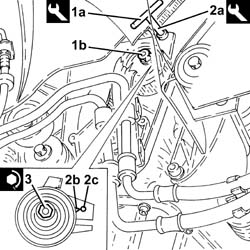
Applies to: engines: 2.0 JTS, 2.0 JTS; all production periods
Rotate the crankshaft through two revolutions in its direction of rotation (clockwise - timing side) until cyllinder no. 1 is at TDC in the explosion stroke and check that the engine timing is correct using the tool.
| Name | Country |
|---|---|---|
- | Gauge | 1.870.859.000 |
Remove the tool to check T.D.C. from the cylinder 1 spark plug socket.
| Name | Country |
|---|---|---|
- | Extension | 1.860.895.001 |
Place the spark plug for cylinder no. 1 back in its housing and tighten them to the recommended torque.
| Fastening | Component | Ø | Value (daNm) |
|---|---|---|---|---|
- | - | SPARK PLUGS | M14 | (Cylinder head side) 2.4 ÷ 3.0 |
1. Fit the counter-balancer shaft drive belt drive pulley (1a) tightening the bolts to the recommended torque.
| Fastening | Component | Ø | Value (daNm) |
|---|---|---|---|---|
1b | Bolt | COUNTER-ROTATING SHAFT DRIVE PULLEY | M6 | (Timing drive pulley side.) 0.8÷1.0 |
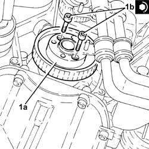
Applies to: engines: 2.0 JTS, 2.0 JTS; all production periods
1. Rotate the counter-balance shafts so that the references (1a) on the pullies are aligned with the ribs (1b).
2. Temporarily fit the lower timing cover and the crankshaft pulley and check the alignment of the references.
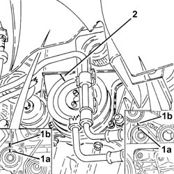
Applies to: engines: 2.0 JTS, 2.0 JTS; all production periods
1. Fit the counter-balance shaft toothed drive belt.
2. Tension the counter-balance shaft drive belt using the tool (2a) so that the reference opening (2b) in the belt tensioner is at the centre of the rotation sector.
| Name | Country |
|---|---|---|
2a | Key | 1.822.154.000 |
3. Tighten the nut fixing the counter-balance shaft drive belt tensioner to the recommended torque.
| Fastening | Component | Ø | Value (daNm) |
|---|---|---|---|---|
3 | Nut | COUNTER-ROTATING SHAFT BELT TENSIONER | M6 | (.Left. counter balance shaft front) cover side 0.8÷1.0 |
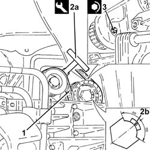
Applies to: engines: 2.0 JTS, 2.0 JTS; all production periods
1. Place the tappet cover (1a), complete with gasket, back in its housing and secure it tightening the bolts (1b) to the recommended torque.
| Fastening | Component | Ø | Value (daNm) |
|---|---|---|---|---|
1b | Bolt | CAM COVER | M6 | (Cylinder head side) 0.8 ÷ 1.0 |
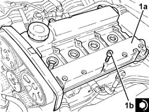
Applies to: engines: 2.0 JTS, 2.0 JTS; all production periods
Connect the vapour recovery pipe connector to the tappet cover and tighten the relevant bolt.
Secure the fuel supply pipe to the high-pressure pump to the band on the tappet cover.
1. Place the ignition coils (1a) back in their housings and secure them by tightening bolts (1b) to the recommended torque.
| Fastening | Component | Ø | Value (daNm) |
|---|---|---|---|---|
1b | Bolt | IGNITION COIL/REEL | M6 | (Tappet cover side) 0.8 ÷ 1.0 |
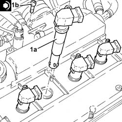
Applies to: engines: 2.0 JTS, 2.0 JTS; all production periods
Refit the wiring duct and secure with bolts.
Connect the earth lead to the tappet cover and secure it with its bolt.
Connect the electrical connections to the ignition coils.
Fit the lower protective timing cover and secure using the bolts.
Place the protective timing side covers back in their housings and secure them using the bolts.
Fit the upper protective timing gear cover and fix it using the bolts.
1. Place the engine components single drive belt fixed tensioner (1a) back in its housing and fix it tightening the bolt (1b) to the recommended torque.
| Fastening | Component | Ø | Value (daNm) |
|---|---|---|---|---|
1b | Bolt | FIXED SINGLE SERVICE BELT TENSIONER | M8 | 2.2 ÷ 2.8 |
2. Place the engine components single drive belt fixed tensioner plug back in its seating.
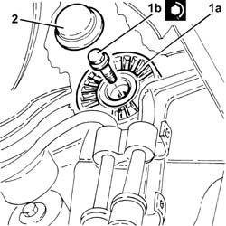
Applies to: engines: 2.0 JTS, 2.0 JTS; all production periods
Fit the flywheel lock.
| Name | Country |
|---|---|---|
- | Counter-torque | 1.860.898.000 |
1. Place the crankshaft pulley (1a) back in its seating and secure it tightening the bolts (1b) to the specified torque.
| Fastening | Component | Ø | Value (daNm) |
|---|---|---|---|---|
1b | Bolt | CRANKSHAFT PULLEY | M8 | 2.3 ÷ 2.8 |
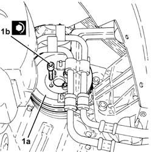
Applies to: engines: 2.0 JTS, 2.0 JTS; all production periods
Remove the flywheel lock.
| Name | Country |
|---|---|---|
- | Counter-torque | 1.860.898.000 |
Place the protection back in its housing and secure it using the bolt.
Use a spanner in an anti-clockwise direction on the moving tensioner and fit the engine components single drive belt.
Fit the brackets securing the power steering pipes in their seatings and secure them with their nuts.
Place the right front wheel housing dust protection back in its housing and secure it using the fastenings and buttons.
Refit the engine components single drive belt protection in its seating and secure with its nut and bolts.
Proceed with refitting 1016A40 ignition coil cover on cylinder head- r+r .
Proceed with refitting 7055B54 under-engine guard - r r .
Proceed with refitting 4450B04 right front wheel r r .
Connect the negative (-) battery terminal.
Remove the car from the ramps.
Applies to: engines: 1.9 JTD 8v ; all production periods
Applies to: engines: 1.9 JTD 16v; all production periods
Removing
RefittingPosition the vehicle on the ramp
Proceed with removal 1016A10 sound-proofing cover - r + r
Ensure that the ignition key is in the OFF position, then disconnect the negative battery terminal (-).
| Name | Connector |
|---|---|---|
- | Battery |
Proceed with removal 1008C10 power unit upper reaction link r r
Proceed with removal 1060G80 ds electric injection control unit - r r
Proceed with removal 4450B04 right front wheel r r
Proceed with removal 7055B54 under-engine guard - r r
Proceed with removal - 7055B91 Right front WHEEL ARCH LINER - R.R.
Proceed with removal 1092G10 single engine belt r r
Proceed with removal 1092A10 Crankshaft services PULLEY - R.R.
Proceed with removal 1092G20 engine component single belt fixed tensioner - one - r + r
Proceed with removal 1032D12 timing system protective cover(s) - r + r
1. Undo the bolts (1a) and (1b), then remove the bracket on the engine for the reaction rod (1c).
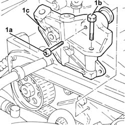
Applies to: engines: 1.9 JTD 16v; all production periods
1. Loosen the nut securing the timing belt mobile tensioner
2. Prise off and remove the timing belt.
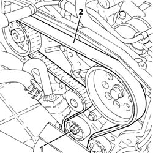
Applies to: engines: 1.9 JTD 16v; all production periods
Refitting
Removing1. Remove the plug (1a) and fit the exhaust side camshaft template (1b).
| Name | Country |
|---|---|---|
1b | Gauge | 1.870.986.900 |
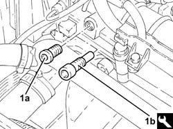
Applies to: engines: 1.9 JTD 16v; all production periods
1. Loosen the exhaust side camshaft toothed drive pulley fixing bolt.
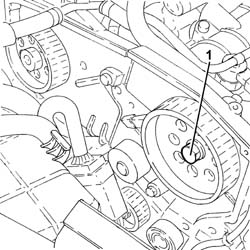
Applies to: engines: 1.9 JTD 16v; all production periods
1. Undo the bolt for the crankcase front cover shown in the diagram.
Temporarily fit the timing drive belt on the drive pulley.
2. Fit the tool (2a) and secure it gauged bolts (2b)
| Name | Country |
|---|---|---|
2a | Template | 1.860.905.000 |
| Name | Country |
|---|---|---|
2b | Calibrated screw | 1.860.905.010 |
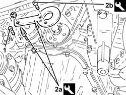
Applies to: engines: 1.9 JTD 16v; all production periods
1. Completely fit the timing belt.
2. Use a screwdriver to lever in the hole (2a) until the reference on the tensioner (2b) lines up with the reference hole (2c) and, in this position, tighten the tensioner nut (2d) to torque.
| Fastening | Component | Ø | Value (daNm) |
|---|---|---|---|---|
2d | Nut | MOBILE TIMING TENSIONER | M10 | 4.2 ÷ 5.2 |
3. Tighten the exhaust side camshaft toothed drive pulley fixing bolt to the recommended torque.
| Fastening | Component | Ø | Value (daNm) |
|---|---|---|---|---|
3 | Bolt | TIMING GEAR DRIVEN PULLEYS | M12 | (Exhaust camshaft side) 10.8÷13.2 |
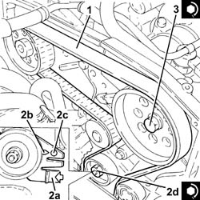
Applies to: engines: 1.9 JTD 16v; all production periods
Remove the timing tools.
| Name | Country |
|---|---|---|
- | Gauge | 1.870.986.900 |
| Name | Country |
|---|---|---|
- | Template | 1.860.905.000 |
| Name | Country |
|---|---|---|
- | Calibrated screw | 1.860.905.010 |
Rotate the crankshaft through two revolutions.
Check once again that the timing is correct by refitting the timing tools.
Check that the tensioning references on the timing belt tensioner are aligned.
Tighten the bolt for the crankcase front cover previously removed.
Tighten the plug in the camshaft housing for fitting the exhaust side timing tool.
1. Fit the bracket on the engine for the reaction rod (1a) and fix it tightening the bolts (1b) and (1c) to the recommended torque.
| Fastening | Component | Ø | Value (daNm) |
|---|---|---|---|---|
1b | Bolt | REACTION LINK BRACKET ON ENGINE | M10 | (Cylinder head side), 4.5 ÷ 5.5 |
| Fastening | Component | Ø | Value (daNm) |
|---|---|---|---|---|
1c | Bolt | REACTION LINK BRACKET ON ENGINE | M10 | (Power assisted steering pump mounting side), 4.5 ÷ 5.5 |
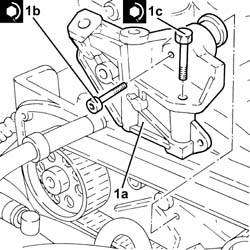
Applies to: engines: 1.9 JTD 16v; all production periods
Proceed with refitting 1032D12 timing system protective cover(s) - r + r
Proceed with refitting 1092G20 engine component single belt fixed tensioner - one - r + r
Proceed with refitting 1092A10 Crankshaft services PULLEY - R.R.
Proceed with refitting 1092G10 single engine belt r r
Proceed with refitting - 7055B91 Right front WHEEL ARCH LINER - R.R.
Proceed with refitting 7055B54 under-engine guard - r r
Proceed with refitting 4450B04 right front wheel r r
Proceed with refitting 1060G80 ds electric injection control unit - r r
Proceed with refitting 1008C10 power unit upper reaction link r r
Connect the negative (-) battery terminal
Proceed with refitting 1016A10 sound-proofing cover - r + r
Remove the car from the ramps.
Applies to: engines: 2.4 JTD 20v; all production periods
Removing
RefittingPosition the vehicle on the ramp.
Proceed with removal 4450B04 right front wheel r r .
Proceed with removal 7055B54 under-engine guard - r r .
Proceed with removal - 7055B91 Right front WHEEL ARCH LINER - R.R. .
Proceed with removal - 7055B66 Engine compartment DUST SHIELD protection in right front wheel arch - R.R. .
Proceed with removal 1092G10 single engine belt r r .
Proceed with removal 1092A10 Crankshaft services PULLEY - R.R. .
Proceed with removal 1092G21 engine component single belt fixed tensioner - r rwith belt removed .
Proceed with removal 1016A10 sound-proofing cover - r + r .
Proceed with removal 1008C10 power unit upper reaction link r r .
Proceed with removal 1032D12 timing system protective cover(s) - r + r .
1. Slacken the nut on the timing belt moving tensioner.
2. Prise off and remove the timing belt.
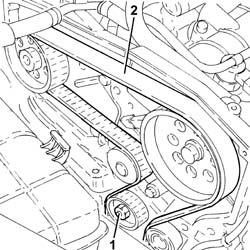
Applies to: engines: 2.4 JTD 20v; all production periods
Refitting
Removing1. Remove the plugs (1a) and fit the camshaft timing tools (1b) in the cylinder head extension from the exhaust side.
| Name | Country |
|---|---|---|
1b | Gauge | 1.870.896.900 |
2. Tighten the toothed driven pulley bolt.
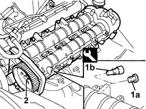
Applies to: engines: 2.4 JTD 20v; all production periods
1. Undo the bolt for the crankcase front cover shown in the diagram.
Temporarily fit the timing drive belt on the drive pulley. Check that the belt teeth are correctly inserted in the pulley grooves.
2. Fit the tool (2a) and secure it gauged bolts (2b)
| Name | Country |
|---|---|---|
2a | Template | 1.860.905.000 |
| Name | Country |
|---|---|---|
2b | Calibrated screw | 1.860.905.010 |
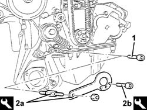
Applies to: engines: 2.4 JTD 20v; all production periods
1. Completely fit the timing belt.
2. Use a screwdriver to lever in the hole (2a) until the reference on the tensioner (2b) lines up with the reference hole (2c) and, in this position, tighten the tensioner nut (2d) to torque.
| Fastening | Component | Ø | Value (daNm) |
|---|---|---|---|---|
2d | Nut | MOBILE TIMING TENSIONER | M10 | 4.5 ÷ 5.5 |
3. Tighten the toothed drive pulley bolt to the specified torque.
| Fastening | Component | Ø | Value (daNm) |
|---|---|---|---|---|
3 | Bolt | TIMING GEAR DRIVEN PULLEYS | M12 | (Exhaust camshaft side) 12.0 |
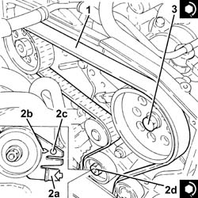
Applies to: engines: 2.4 JTD 20v; all production periods
Remove the timing tools.
| Name | Country |
|---|---|---|
- | Gauge | 1.870.986.900 |
| Name | Country |
|---|---|---|
- | Template | 1.860.905.000 |
| Name | Country |
|---|---|---|
- | Calibrated screw | 1.860.905.010 |
Rotate the crankshaft through two revolutions.
Check once again that the timing is correct by refitting the timing tools.
Check that the tensioning references on the timing belt tensioner are aligned.
Tighten the bolt for the crankcase front cover previously removed.
Tighten the plug in the camshaft housing for fitting the exhaust side timing tool.
Proceed with refitting 1032D12 timing system protective cover(s) - r + r .
Proceed with refitting 1008C10 power unit upper reaction link r r .
Proceed with refitting 1016A10 sound-proofing cover - r + r .
Proceed with refitting 1092G21 engine component single belt fixed tensioner - r rwith belt removed .
Proceed with refitting 1092A10 Crankshaft services PULLEY - R.R. .
Proceed with refitting 1092G10 single engine belt r r .
Proceed with refitting - 7055B66 Engine compartment DUST SHIELD protection in right front wheel arch - R.R. .
Proceed with refitting - 7055B91 Right front WHEEL ARCH LINER - R.R. .
Proceed with refitting 7055B54 under-engine guard - r r .
Proceed with refitting 4450B04 right front wheel r r .
Remove the car from the ramps.
Topics linked from this page (15)
- 1008C10 power unit upper reaction link r r
- 1016A10 sound-proofing cover - r + r
- 1016A40 ignition coil cover on cylinder head- r+r
- 1032B14 toothed timing belt - r + r for timing adjustment or replacement versions with air conditioner
- 1032D12 timing system protective cover(s) - r + r
- 1060G80 ds electric injection control unit - r r
- 1092A10 Crankshaft services PULLEY - R.R.
- 1092G10 single engine belt r r
- 1092G20 engine component single belt fixed tensioner - one - r + r
- 1092G21 engine component single belt fixed tensioner - r rwith belt removed
- 4450B04 right front wheel r r
- 7055B54 under-engine guard - r r
- A1B Battery ( BATTERY NEGATIVE )
- A30 Ignition coil
- C40 Earth on engine
Topics that link to this page (30)
- Z53 MISFIRE ERROR
- 0010M20 120,000km service coupon, emission control versions
- 0510A20 timing gear with belt drive - check - carry out operation with cam cover(s) removed and tappets adjusted
- 1016B10 single cylinder head extension - change gasket
- 1016C10 cylinder head - r + r and replace gasket
- 1020D14 front crank shaft oil seal cover - r + r and replace seals for versions with oil pump on crank shaft, timing side
- 1020D15 Crankshaft oil seal FRONT COVER - R.R. and Replace. gaskets on engines with oil pump on crankshaft and heat exchanger
- 1020D18 front crank shaft cover oil seal - replace
- 1020E10 oil seal cover (one) - l or r - on counter-rotating shafts - r + r and replace seals
- 1028H10 connecting rod and piston set - r r
- 1028H20 piston with connecting rod - r r
- 1032B40 toothed-driven pulley (one) - r + r with timing belt removed
- 1032B46 toothed drive pulley - r + r
- 1032B52 toothed driven pulley (one) - r + r
- 1032B60 bolt pulley - r r
- 1032B61 timing belt pulley - r r
- 1032C18 mobile timing system tensioner - r + r for 24 valve engines
- 1032C32 fixed timing system tensioner (one) r + r
- 1036C10 camshaft in cylinder head - r r on vehicle
- 1036H57 hydraulic tappets all r r
- 1036L10 camshafts in cylinder head extension - r r - includes cylinder head extension replacement if necessary
- 1036L20 camshaft idler gears - replace
- 1036L30 front oil seal of intake camshaft in cylinder head extension replace
- 1056F51 Cam angle SENSOR - R.R.
- 1060E10 pressure pump - r r
- 1060E30 pressure pump pulley - r r
- 1060E40 supplementary pressure pump - r r
- 1072B10 inlet manifold - r + r and replace seal
- 1088C10 water pump - r + r
- 4130B32 power steering pump mount - r r